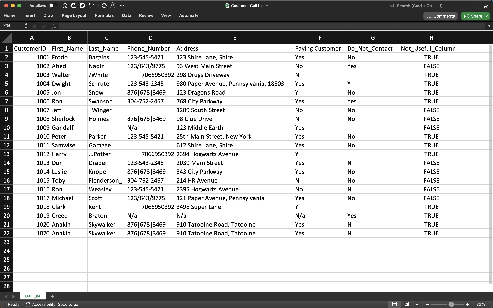
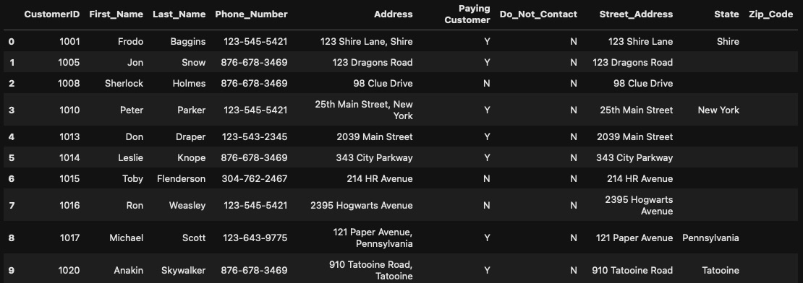

Data Cleaning -
Customer Call Data
Data Set: Press Here
GitHub File: Press Here
Overview:
This project demonstrates essential Python data cleaning techniques on a customer call dataset, streamlining data for better insights. Proper cleaning is critical for accurate analysis, especially when preparing data for reporting, dashboarding, or further transformations in data analysis workflows.
Key Skills Used:
• Pandas for reading Excel and manipulating data efficiently
• String Handling and Data Cleaning: Fixing phone numbers, removing duplicates, and cleaning names
• Data Transformation: Simplifying and splitting columns, transforming categorical data
Code Description:
The code loads the customer call data from Excel, removes duplicates, and cleans up phone numbers, addresses, and customer statuses. It then filters out irrelevant entries (e.g., do-not-contact customers), ensuring the data is ready for analysis or visualisation.
Why This Project is Worth Doing:
• Data cleaning is an integral part of any data pipeline, ensuring the dataset is accurate and consistent.
• This project highlights the use of Python's Pandas library for cleaning, transforming, and preparing data for analysis.
• The steps involved teach how to handle real-world messy datasets, a key task for data analysts.
Step-by-Step Guide for Data Cleaning:
- Remove Duplicates: Eliminate duplicate rows in the dataset.
- Clean Phone Numbers: Remove non-numeric characters and format the numbers for consistency.
- Fix Names and Addresses: Use string manipulation techniques to clean up last names and split addresses into columns.
- Remove Irrelevant Entries: Exclude customers with "Do Not Contact" status and missing phone numbers.

Final Cleaned Dataset:

CONCLUDING REMARKS
This project provided me with hands-on experience in cleaning real-world data using Python’s Pandas library, which is critical for any data analysis workflow. By working with messy customer call data, I developed skills in identifying and fixing common data issues, such as duplicates, inconsistent formats, and missing values. Cleaning data is an essential step to ensure accuracy and reliability in any analysis, and this project helped solidify my understanding of how to efficiently prepare datasets for deeper analysis. The process of transforming raw data into clean, structured information is key for generating insights that drive meaningful decisions. These skills will be instrumental in handling future datasets and ensuring data quality for business reporting and dashboarding.